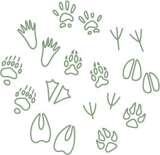
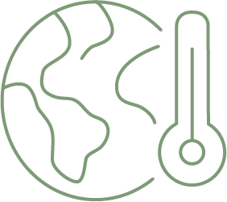

Six domaines, des intitulés qui trompent
Eau, biodiversité, urbanisme, agriculture, climat, éducation à l'environnement : les métiers de l'environnement dans le secteur public sont nombreux et variés. Mais leurs noms ne le montrent pas toujours.
Technicien rivière, chargé de mission bassin versant, gestionnaire de milieux aquatiques

Chargé·e de mission natura 2000, gestionnaire d'espaces naturels, coordinateur·rice biodiversité
Chargé·e d'études urbanisme, responsable PLU, coordinateur·rice aménagement durable
Animateur·rice projet alimentaire territorial, chargé·e de mission agriculture durable

Chargé·e de mission PCAET, coordinateur·rice transition énergétique, responsable adaptation

Animateur·rice nature, chargé·e de sensibilisation, coordinateur·rice éducation à l'environnement (EEDD)